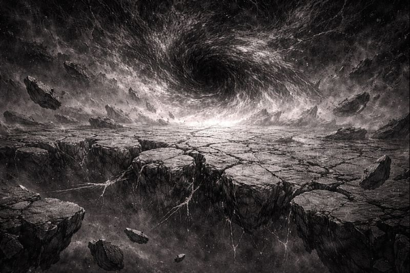
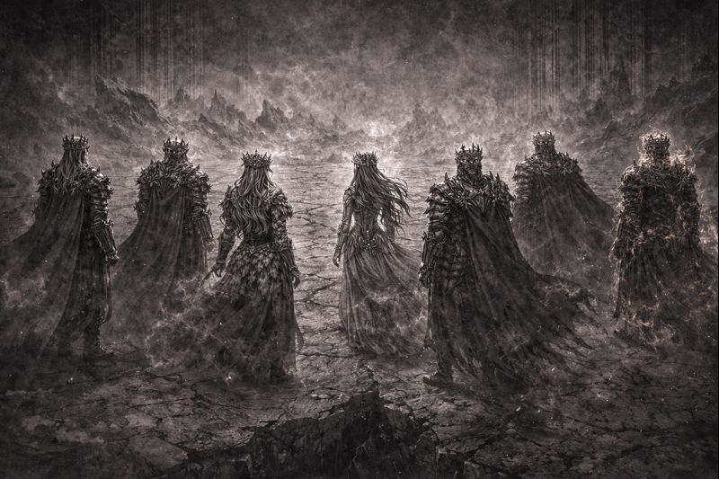
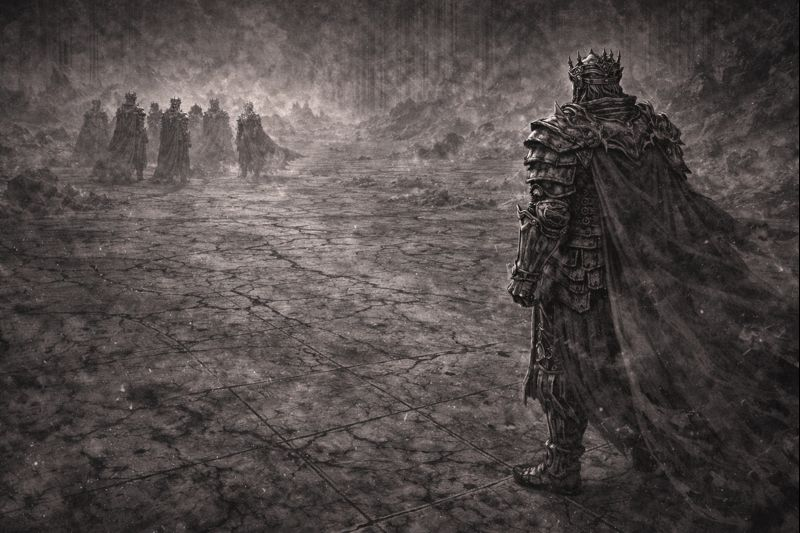
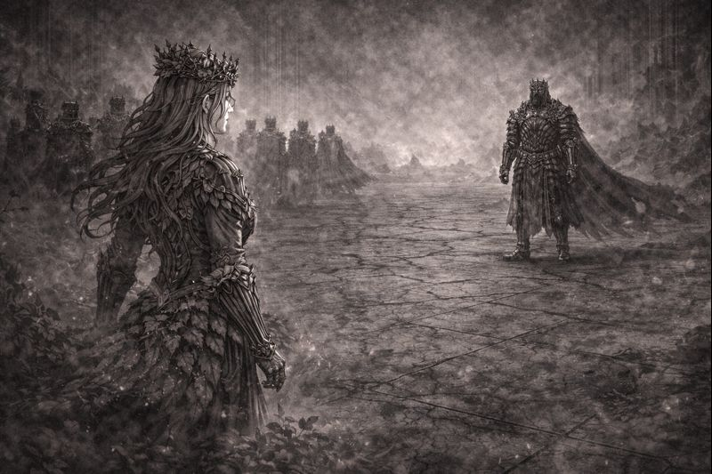
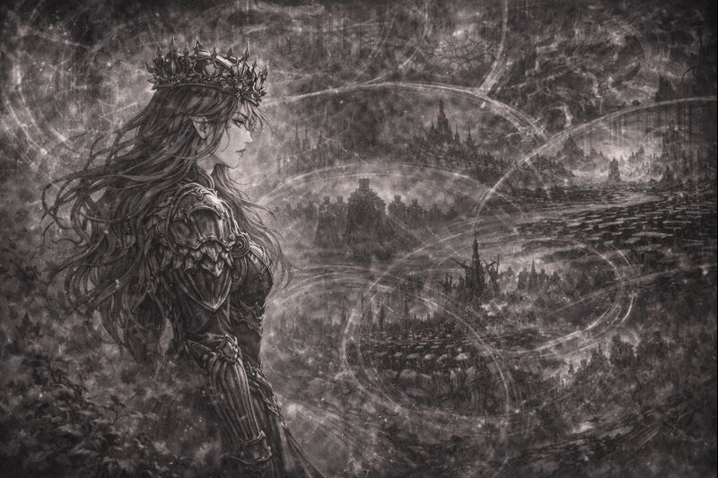
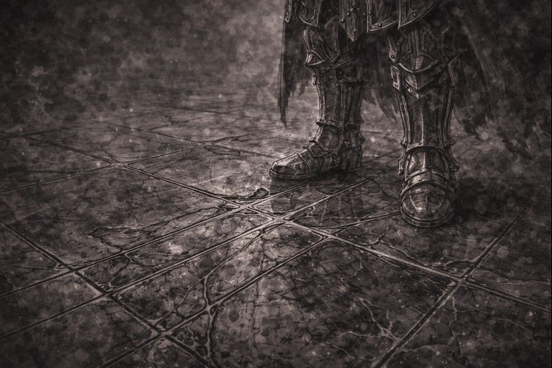
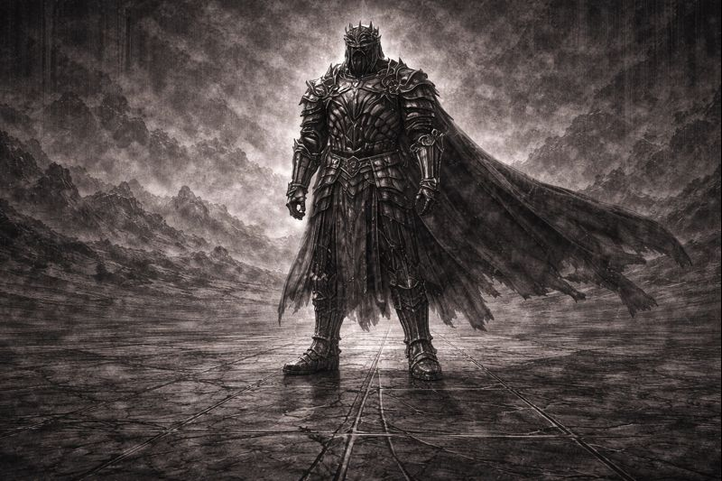
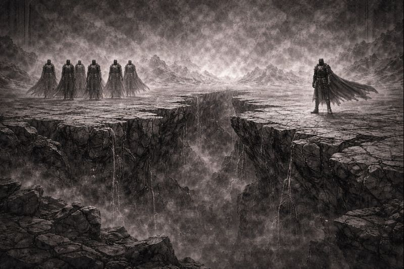

CHAPTER 13
Ferron’s Choice

The Nexus did not heal this time.
The cracks remained.
Not spreading.
Not closing.
As if the world itself waited
for a decision to be made.

Seven Sovereigns stood together.
Not in unity—
but in necessity.
For the first time since their crowning,
one of them stood apart.

Ferron did not interrupt them.
He listened.
To anger.
To fear.
To grief.
And when they finished—
he still stood unmoved.

“Order that cannot bend will break,”
Verdani said softly.
“Life survives because it adapts.”
“Because it fails.”
“Because it changes.”
“You are asking existence
to stop becoming.”

Aetheria spoke last.
“I see what follows certainty,” she said.
“Endless correction.”
“Endless restraint.”
“Endless silence.”
“And when the world resists—
you will tighten your grip.”
Ferron lowered his gaze.
He remembered chaos.
He remembered collapse.
He remembered what came before order.
“I will not let the world return to that,”
he said quietly.

Iron shifted beneath his feet.
Not summoned.
Not commanded.
It accepted the choice.

“If order must stand alone,” Ferron said,
“then I will stand with it.”
“I will bear the weight.”
“I will endure the hatred.”
“The world will not break again.”

No declaration followed.
No exile was spoken aloud.
And yet—
the distance became law.
From beyond the Nexus,
something observed in silence.
Not approval.
Not delight.
Understanding.
TO BE CONTINUED